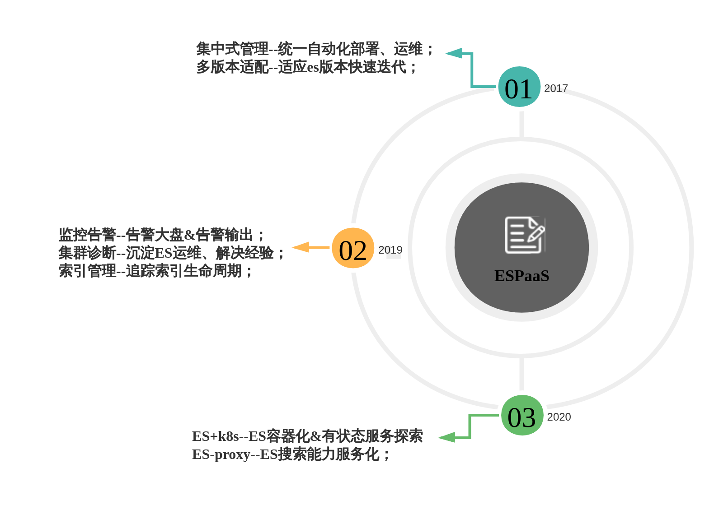
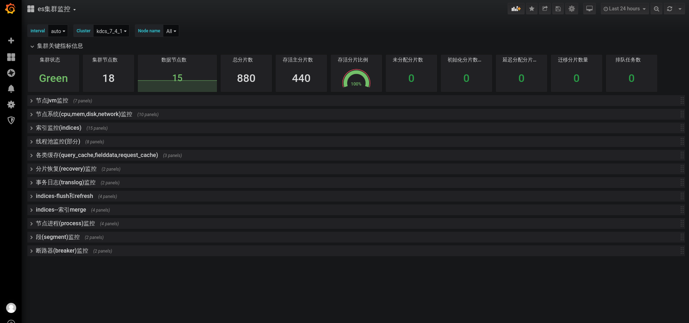
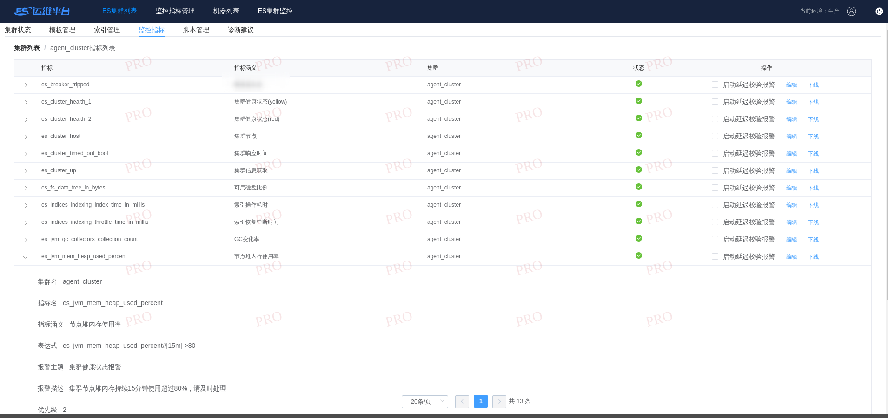
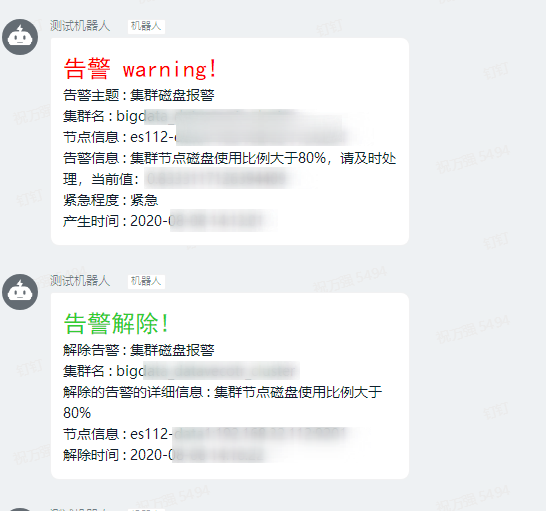
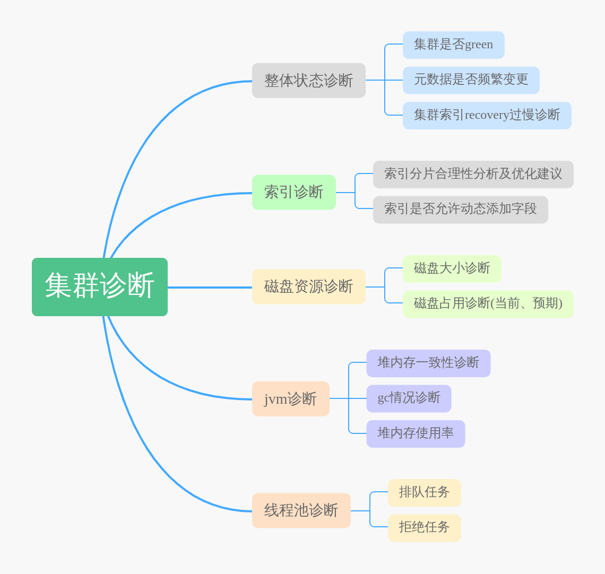
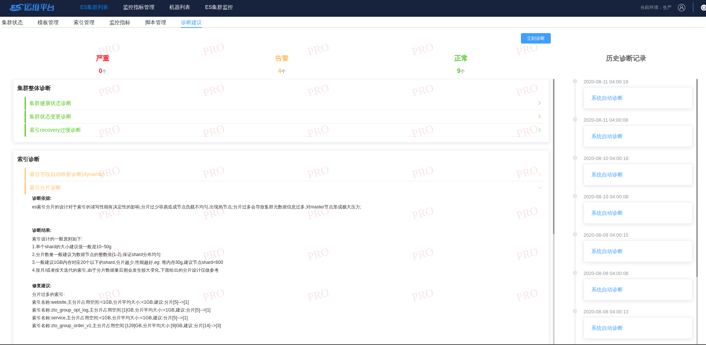

中通Elasticsearch集群运维实践（二）--监控告警
背景介绍：
中通在2015年的时候已经开始预研并在生产环境使用Elasticsearch集群，随后在科技中心开始大规模实践。随着业务的快速发展，es集群数量和规模也越来越大，版本的跨度也逐渐拉大，统一管理这些es集群逐渐变成了首要问题，在这种情况下，我们研发了中通ES运维监控平台–ESPaaS，提供了ES集群的自动化部署，统一监控，实时告警和索引管理等一系列运维管理功能，截止2020年7月底，中通生产上运行的es集群数量已经有40+个，节点数量500+个，单个集群的节点数从3个到100多个，单日新增文档数量近600亿，单日数据增量超过100tb，数据总量已经超6PB。
不同的阶段，关注和解决的问题也不一样，ESPaaS平台的版本迭代主要分为以下几个阶段：
本文主要介绍的是中通ESPaaS运维平台在统一监控告警上的实践，主要关注以下内容：
- 集群实时监控
- 告警输出
- 集群诊断
架构设计
prometheus作为现在最流行的监控解决方案之一，经过一番调研，决定以prometheus为核心，搭建监控体系，监控告警的整体架构如下图所示：
整个监控模块围绕prometheus进行展开，主要的功能有：
- 自研exporter获取线上es集群的关键指标信息，暴露的rest接口能根据请求中的集群名称返回不同集群的监控信息；
- prometheus采取pull模式，定期请求exporter以获取es集群的监控信息；
- grafana配置监控大盘对监控数据进行可视化；
- 告警应用给予promQL定期计算是否有指标异常，指标细化到各个es集群；
- 告警渠道目前主要采用钉钉，及时发送告警信息到钉钉群，快速定位问题集群、节点信息；
- 告警设立优先级，同时触发优先级高的先行发送，直指问题本质；
- 延迟告警避免偶发抖动造成的频繁告警与告警恢复；
- 诊断模块整合实时信息和历史监控趋势，发现潜在问题，消灭问题于萌芽状态；
集群监控与告警
为了保证ES集群的稳定运行，我们需要从多个维度对ES集群进行监控，主要的维度信息如下：
- 资源类，包含部署ES机器的cpu、内存、网络、磁盘等信息；
- 集群级，ES集群本身是否处于健康状态，从一个较大的维度确认集群是否正常；
- 节点级，ES作为一个分布式的应用，每个节点的状态会最终影响集群的状态，需要对节点的jvm、线程池等进行监控；
最终形成的监控大盘如下：
告警配置：
告警信息：
集群诊断
上面的监控告警能帮助我们快速定位集群的现有的问题，但是从长远角度来看，我们需要在问题出现之前提前发现、提前解决，尽可能避免生产故障。带着这样的思考，我们决定提供es集群的诊断能力–将对问题的排查手段和实践经验进行复用，将其标准化，最终沉淀在我们的集群诊断模块中。
诊断模块的设计思想是核心指标量化，利用量化的指标来帮助我们明确优化方向和快速定位问题，总结日常的问题排查和解决经验，我们将诊断分为五个维度：
集群诊断基本涵盖了日常处理es集群问题的大部分场景，通过集群诊断，我们能够提前发现集群的潜在问题，通过提前扩容，更改索引设计与使用方式等行为来规避可能的生产问题。在集群监控和诊断的保驾护航下，2020年至今ESPaaS运维平台管理的ES集群没有发生生产故障。
诊断建议的界面：
实践经验
在监控告警和集群诊断的实际开发与使用过程中，我们也积累了很多的经验。
1、es集群突然无法写入了，应用日志中全部都是写入失败的记录？
在实际的问题排查中，发现大部分情况下都是集群部分节点磁盘超过90%触发当前节点的索引read_only，导致无法写入。
解决措施：
1 | # 解除索引只读 |
发生磁盘超过水位线的问题，一方面是对索引或者集群的容量规划做的不到位，另一方面也是监控告警的缺乏导致问题最终发生了。在引入监控告警后，我们对各个ES集群的磁盘设置了告警水位线，80%是告警的阈值，在集群的磁盘超标前，能够发送告警信息，让我们有时间和业务方提前沟通清理数据释放部分磁盘空间。在集群诊断中，我们依据磁盘过去一段时间的使用比例线性预测一天、七天后的使用量，提前和业务方进行沟通，对可能出现问题的集群提前进行扩容，避免出现资源瓶颈。
2、监控大盘的信息解读
监控大盘的引入，将监控指标以图表的形式展示出来，让我们能够直观的看到监控指标的当前数值和变化趋势，能帮助我们快速对es集群的资源利用率，性能瓶颈有一个大致的认知.通过下面的监控信息可以看出：
- 集群当前是green状态，节点分布是 1master+13data节点；
- 主分片数量197，分片数量较少，不会出现单个节点数千个分片的情况；
- 多数节点节点在7:00-8:00gc较为频繁，此时段可能为业务高峰期，可能会有大量的写入或者查询等操作；
- 整体堆内存占用在50-70%之间，证明集群整体资源暂时没有瓶颈；
- gc次数和gc耗时的面板发现有节点出现毛刺，可以通过分片监控查看是否分片分配不均匀导致了热节点；
3、频繁告警的处理
在告警功能初次上线时，有些集群的资源使用率比较高，部分节点内存占用超标了，当时的告警策略是一分钟检测一次，如果有异常就产生告警。这会带来频繁告警的问题，如果问题修复的时间较长，那每分钟都会产生一次告警信息，造成告警信息轰炸，告警群的告警信息全部都是同一条，不禁让人厌烦，还会导致开发小伙伴忽略其他的告警内容。
面对这种情况，参考一些业界的告警设计，在初次告警后，再次触发的告警不再立马发出，而是给予不同的时间间隔，如果在告警半小时后，问题没有解决，指标依旧异常，则产生第二次钉钉告警，告警间隔逐级顺延直至恢复，大大减少了重复的告警数量。
4、延迟告警的设计
内部的日志es集群，会存储近2月的日志索引，但是7天前的默认会关闭，由于经常有同学需要排查历史问题需要开启已经closed掉的索引，在索引开启的过程中，会造成日志es集群的短暂red/yellow状态，导致触发告警后又立即恢复，在钉钉告警群中大量刷消息。
面对这种能够自恢复的问题，我们决定设置延迟告警的策略，如果在告警触发的数分钟内(可配置)，告警指标恢复正常则不再进行告警，将这类偶发的抖动问题变成静默状态，不再干扰正常的告警。
脚踏实地，展望未来
ES容器化
kubernetes的应用越来越广泛，ES+k8s将是中通在有状态服务上的探索与尝试；
ES-Proxy–提供搜索服务
未来希望将ES提供的搜索能力标准化，用户通过proxy使用ES，不必关心具体ES集群部署和索引分布；